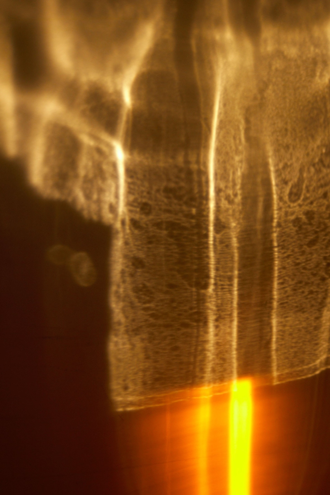
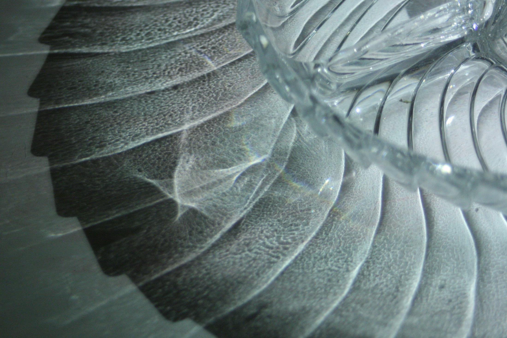
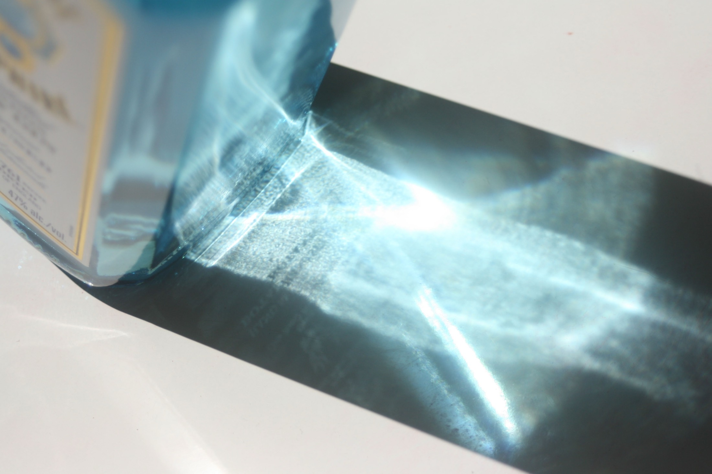
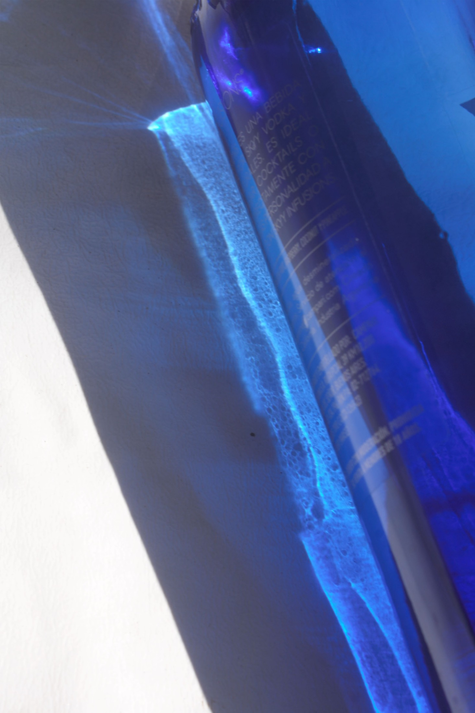
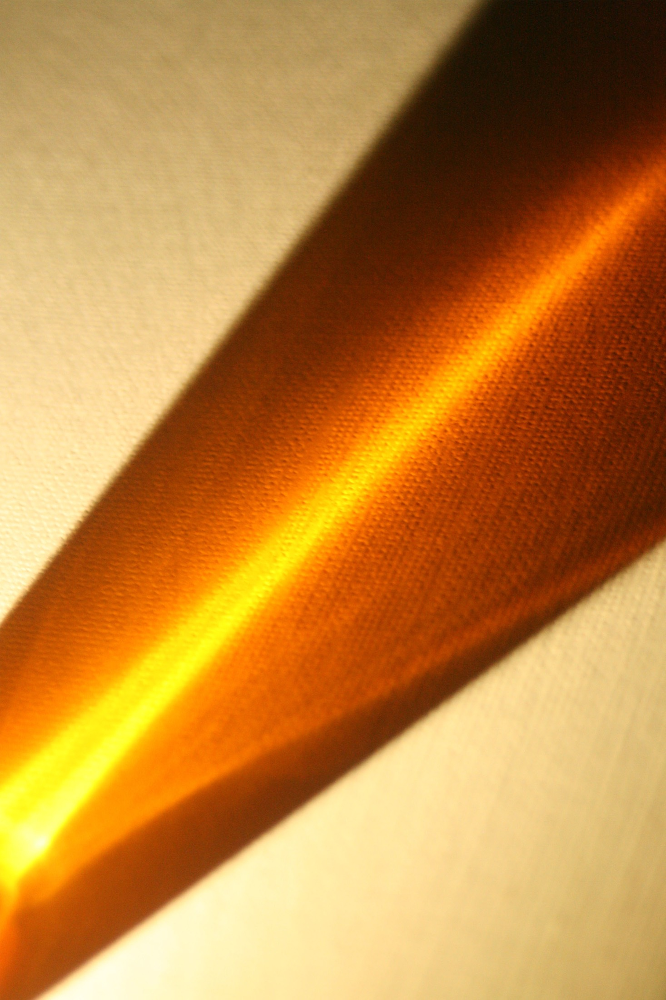
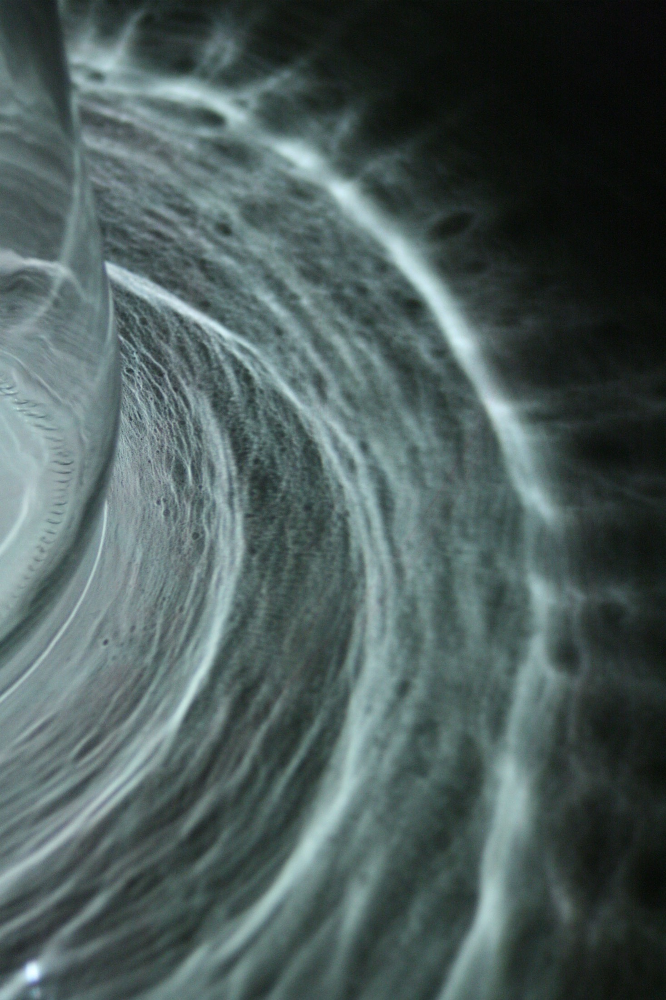
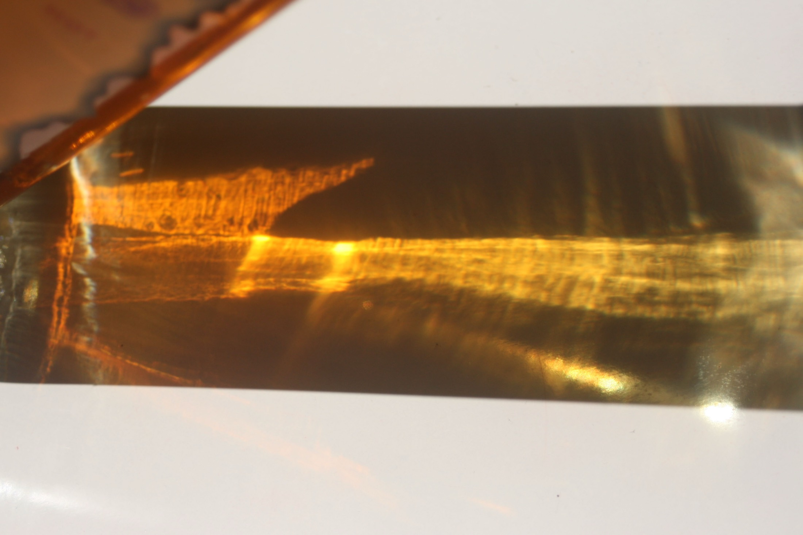

ECOS DE LUZ
Fotografía

Una serie fotográfica que explora la luz como materia y memoria: el instante en que lo cotidiano se vuelve atmósfera.
01
La luz como estructura
El proyecto parte de una premisa simple: dejar que la luz organice la imagen. La estructura no se impone con retículas, sino con el contraste entre lo iluminado y lo oculto.
Cada toma busca esa jerarquía natural que guía la mirada, donde el grano y la sombra son la huella manual dentro de la fotografía.

La luz que se desvanece y deja su eco.
02
La serie




